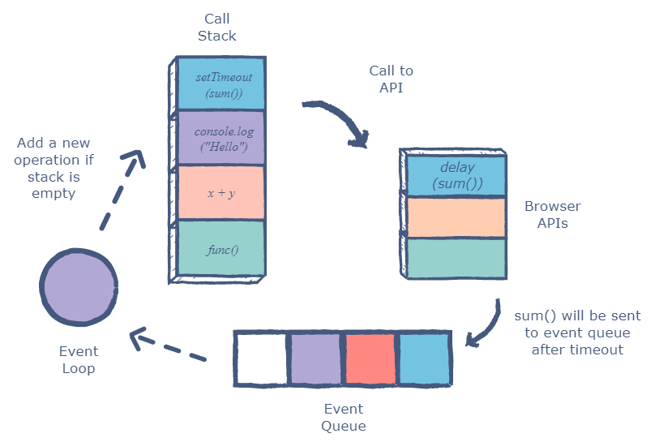
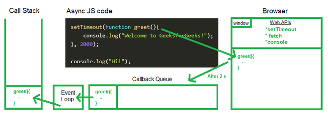

setTimeout function, Event loop and callback queue, callback function, callback hell
setTimeout() Method:
The global setTimeout() method sets a timer which executes a function or specified piece of code once the timer expires.
Syntax:
var timeoutID = setTimeout(function[, delay])
Ex:-
Input =>
console.log("I'm First");
setTimeout(()=>{
console.log("I'm executed after 3s")
},3000);
console.log("I'm Second");
Output =>
I'm First
I'm Second
I'm executed after 3s
Event Loop:
The event loop is a constantly running process that monitors both the callback queue and the call stack.
If the call stack is not empty, the event loop waits until it is empty and places the next function from the callback queue to the call stack. If the callback queue is empty, nothing will happen.

Closure:
A closure is the combination of a function bundled together (enclosed) with references to its surrounding state (the lexical environment). In other words, a closure gives you access to an outer function's scope from an inner function.
In JavaScript, closures are created every time a function is created, at function creation time.
Example =>
function OuterFunction() {
var outerVariable = 100;
function InnerFunction() {
console.log(outerVariable);
}
return InnerFunction;
}
var innerFunc = OuterFunction();
innerFunc(); // 100
In the above example, return InnerFunction; returns InnerFunction from OuterFunction when
you call OuterFunction(). A variable innerFunc reference the InnerFunction() only, not
the OuterFunction(). So now, when you call innerFunc(), it can still access outerVariable
which is declared in OuterFunction(). This is called Closure.
Callback Queue:
When the browser is done with the timer (or any other API which it provides for JS), it doesn't transfer the codes to be executed back to Javascript immediately. When the browser is done, it stores the codes in a callback queue.
The Callback queue waits until the call stack is empty. Afterwards, the codes in it are executed in First In, First Out (FIFO) order.
